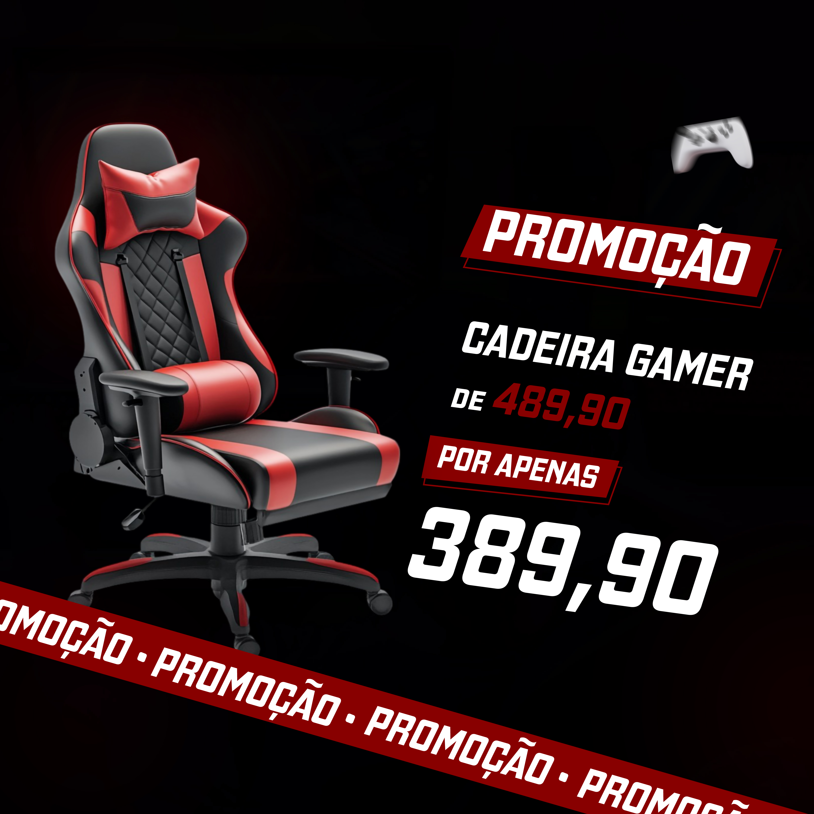

Designer Gráfico para Loja de Informática – Artes Profissionais para Aumentar suas Vendas
Se você está procurando um designer gráfico para loja de informática, eu estou oferecendo meus serviços como designer gráfico freelancer especializado na criação de artes profissionais para divulgação de produtos, promoções e serviços. Desenvolvo designs personalizados para destacar notebooks, PCs, acessórios, periféricos e assistência técnica, ajudando sua loja a atrair mais clientes e aumentar as vendas.

No mercado de tecnologia, a concorrência é alta e a apresentação faz toda a diferença. Um design profissional transmite confiança, organização e credibilidade. Uma arte bem feita valoriza seus produtos e chama atenção nas redes sociais, fazendo com que sua loja se destaque da concorrência.
Artes para Redes Sociais
Crio artes para redes sociais para lojas de informática e também para diversos outros segmentos, como lanchonetes, pizzarias, açaíterias, fast-food, restaurantes, barbearias, academias, lojas de roupas, negócios locais, empresas em geral e páginas esportivas.
Cada design é desenvolvido de forma estratégica, com foco em atrair atenção, destacar promoções e melhorar o engajamento. As artes são otimizadas para Instagram, Facebook e WhatsApp, garantindo qualidade e melhor desempenho nas plataformas.
Divulgação de Produtos de Informática
As artes podem ser utilizadas para divulgar produtos como computadores, notebooks, placas de vídeo, periféricos, acessórios e serviços de manutenção. Um layout bem estruturado ajuda a destacar preços, especificações e benefícios dos produtos.
Isso facilita a decisão de compra do cliente e aumenta as chances de conversão, principalmente em promoções e ofertas especiais.
Vetorização de Logomarcas
Também realizo vetorização de logomarcas, transformando imagens em arquivos vetoriais de alta qualidade. Isso permite que sua logo seja utilizada em qualquer tamanho sem perder qualidade.
A vetorização é essencial para impressão, fachadas, banners, uniformes e redes sociais, garantindo uma aparência profissional em todos os materiais.
Cartão de Visita Profissional
Crio cartões de visita profissionais modernos e organizados, ideais para lojas de informática que desejam fortalecer sua marca e facilitar o contato com clientes.
Um cartão bem elaborado transmite mais credibilidade e ajuda sua empresa a ser lembrada, principalmente em serviços técnicos e atendimento local.
Artes Gráficas Personalizadas
Além das redes sociais, também desenvolvo diversas artes gráficas, como flyers, banners, posts promocionais e materiais para divulgação geral.
Cada projeto é criado com foco em impacto visual, clareza das informações e valorização dos produtos.
Por que contratar um designer gráfico?
Ao contratar um designer gráfico, você garante que sua comunicação visual será feita de forma profissional e estratégica. Isso melhora a percepção da sua marca e pode aumentar suas vendas.
Um designer gráfico freelancer oferece flexibilidade, custo-benefício e atendimento personalizado, entendendo melhor as necessidades do seu negócio.
Processo de Criação
1. Envio das informações
Você envia os detalhes do projeto, como produtos, preços, promoções e referências.
2. Planejamento visual
Organizo as informações de forma estratégica para destacar os pontos mais importantes.
3. Criação do design
Desenvolvo a arte com foco em impacto visual, organização e profissionalismo.
4. Ajustes e entrega
Após aprovação, realizo os ajustes finais e entrego o material pronto para uso.
Perguntas Frequentes (FAQ)
Você cria artes apenas para lojas de informática?
Não. Também crio artes para diversos segmentos, como lanchonetes, pizzarias, açaíterias, academias, barbearias e muito mais.
As artes são feitas para redes sociais?
Sim. Os designs são adaptados para Instagram, Facebook e outras plataformas.
Você faz vetorização de logomarcas?
Sim. Realizo a vetorização para garantir qualidade profissional.
Você cria cartão de visita?
Sim. Desenvolvo cartões modernos e profissionais.
O que preciso enviar para começar?
Envie produtos, preços, logotipo e referências, se tiver.
Um design profissional ajuda nas vendas?
Sim. Um design bem elaborado aumenta o engajamento, melhora a apresentação e influencia na decisão de compra.
Solicite seu Design para Loja de Informática
Se você quer destacar sua loja com artes profissionais e aumentar suas vendas, entre em contato agora mesmo e solicite um orçamento personalizado.
Se quiser saber mais sobre meu trabalho acesse esse link: Clebson Designer Gráfico
Veja mais algumas que já criei: Arte para açaíteria e Arte para pizzaria